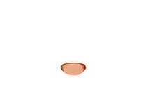

开始使用
先接上画笔，再告诉缇娅画什么。

画匣已经支好了。还差一支能落笔的画笔——先去接上生图服务吧？
一接上画笔
生图服务负责画，模型服务负责读正文、挑画面。
生图 APINAI 或 OpenAI 兼容，必需尚未连接
模型 API为正文找画面、写提示词，可选已就绪
二让角色长相不走样
在插件功能里给角色锚定外貌与服装，缇娅每次都会照着画。
三按自己的习惯摆画匣
自动生图、图片留存、缇娅的大小与台词，都在使用偏好里。
先接上画笔，再告诉缇娅画什么。

画匣已经支好了。还差一支能落笔的画笔——先去接上生图服务吧？
生图服务负责画，模型服务负责读正文、挑画面。
在插件功能里给角色锚定外貌与服装，缇娅每次都会照着画。
自动生图、图片留存、缇娅的大小与台词，都在使用偏好里。
管理用于生成图片的服务连接。
呜，远方的魔力回路好像断开了，颜料送不过来……稍微检查一下接口密钥吧？
401 Unauthorized · https://image.novelai.net/ai/generate-image
保存后，密钥只留在这台设备的浏览器里。
选模型，再定画幅与步数。
原型未展开此页。
翻看保存在这台设备上的配图。
画夹还是空的。等第一张画干透，我就把它夹进来。
原型未展开此页。